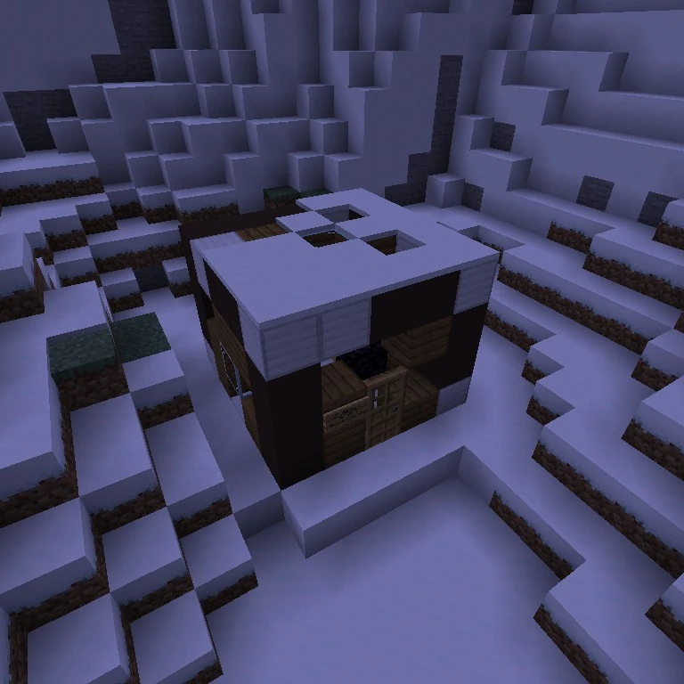

Dondiego Allen
The author of a December 1983 account of apparitions in the mountains and something knocking at his cabin door.
The mountain cabin
Dondiego Allen wrote the book Dec. 15th, 1983, found in the ruins of a mountain cabin belonging to SOLAR. The community article places the cabin at −1133, 121, 2779; the current book inventory records the copy at −1127, 121, 2781. The text is a first-person account of abnormal events during a winter stay. Its interruption suggests danger but does not establish Allen’s fate; community tradition describes him as a former employee who probably disappeared.
The account of December 15, 1983
On the first page, Allen says he erected his little home as part of a winter getaway. Until that night, everything had been wonderful: the mountain air and miniature sequoias offered a pleasant change from Solar Corporation’s stuffy corridors.
On the second page, he says he has been huddled inside the house for three hours. After sunset, he began hearing moaning from the site of an old relative’s homestead, while ghastly figures arose seemingly from nowhere. He retreated to the cabin.
On the third page, he announces his intention to leave at first light the following day. He admits it could all be his imagination. Something starts banging on the door, and his writing breaks off as he tries to say he must finish.
Other SOLAR texts
The account is associated with Solar Corporation and the guide SURVIVING ARCTIC EMERGENCY SCENARIOS SOLAR PUBLISHING ©1997. That title is a 1997 document, separate from Allen’s 1983 entry.
Gallery



See also
Sources and references
- v11.4.4 maps, signs, books and items World records
- December 15th, 1983 · Broville Wiki Community archive
Text adapted and expanded from December 15th, 1983 (contributors and history, revision 4887). Adapted text is available under CC BY-SA 3.0.